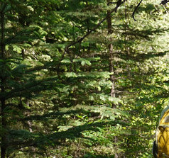
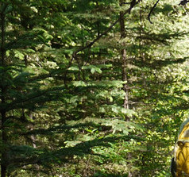
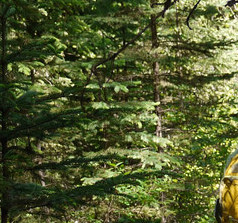

THe most basic way an artist can take advantage of the set of neural network based effects is by taking pictures they know will elicit specific responses from the network. The first image demonstrates how a user can pick an image with strong hrozontal and vertical lines and have them enhanced using the inception 4d_pool layer. The existing vertical lines (The subject's hair) are enhanced to a high degree and because of the convolutionary nature of these filters, that strong effect is present in the other parts of the produced image as well. In the Second two images, the photographer picked a scene specifically to elicit effects of dogs. One of the strongest features in photographs to suggest that the correct classification is strongly dog is the presence of eyes and noses in the form of black dots. This photo was taken that situated black dots in a bland background to essentially control the dog-tree which resulted. In this basic way even someone without knowlege of the specific feature being optimzed can customize images produced by the network.
Neural networks such as imagenet are actually not that sensitive to the specific colors of the images because the yare trained on a wide variety of images with different lighting conditions so the relative colors matter more in perceptron activity more than the specific colors. However effects can be controlled using subjects with distinctive colors relationally. Images without much color difference or intensity difference (see doge below) are closer, from the network's perspective are closer to white noise, so for a given layer the network is less subject to bias ienhancements based upon the content of the picture. So the result of the 'doge' transform is closer to what a white noise input would have produced than the 'tessa' transformation. CLose to exact replicas of the subject's eyes are transplanted onto the subject's eyebrows, indicating the degree to which a high contrast, high energy image biases the results of deep dreaming.
The googlenet network was trained on the imagenet database for the very speciic task of solving a classification challenge of 99 categories, most of which were organic life forms. Therefore when using this network to enhance images, the layers were activated more strongly by organic details as opposed to man made subject features. We see this In this set of images. More organic forms, seen in the maria, cloud, and tree images were more clearly adjusted by the network than the man-made city picture. The layer under contention was a high level convolutional, the effect of man-made vs organic subject matte would not have been seen in a layer which adressed a lower level feature such as lines or dots
Changing the optimization objective: Guiding
Hey Maria do you know how to make these image be like a grid so you can look at the guide and the result side-by-side?
In all previous examples input images were gradually warped to maximize the activation of a given layer with a given set of parameters. To achieve a more controlled effect, in this experiment, the optimization objective was changed. First, features were extracted for the 'guide' image in a given layer. Then the orignal image was gradually warped as to maximize the dot product of the features extracted for the input image with the features extracted for the 'guide' image, essentially enhancing the features in the input image which are particularly strong for the 'guide' image.
In future work, it would be cool to figure out what the activation of a layer should be to maximize the probablity of an image being defined into a certain class, then minimize the distance between the layer's activation and the goal activation to force images to look like an ideal image to be classifed as a certain class. For example find the ideal activation for "cat" then force the input image to maximize that activation, ie look more cat like.

Image of Joel warped to maximize its dot product with the features extracted from an image of clouds
Perhaps the most obvious starting point for controlling the effects of the network based image warping is determining which node's output is being maximized. Since the features caclulated at node n depend not on the original input rather the segments of the original input after the parsing and processing of the 0 - (n-1th) layers, then choosing to maximize node n's output is implicitly controlling and changing the outputs of all previous nodes. Hence when the user specifies a layer to optimize they are actually choosing to run the input through the network and force the image to change to optimally activate every layer up until the end layer specified. A side effect of this is that warping happens faster when a lower level is specified. Here we show a couple of the different layers we experimented with.
Naturally networks trained on different datasets would have different abilities to recognize features. Differential recognition means that the networks are looking for different attributes, activating on different image features, thus having different weights and network parameters. Thus if we are using a network to warp images we will enhance different features by choosing a different network. This Image was generated with the MIT places network, which was trained to recongize photos taken in different geographical features and therefore recognizes/enhances location specific features as opposed to animalia.

 
